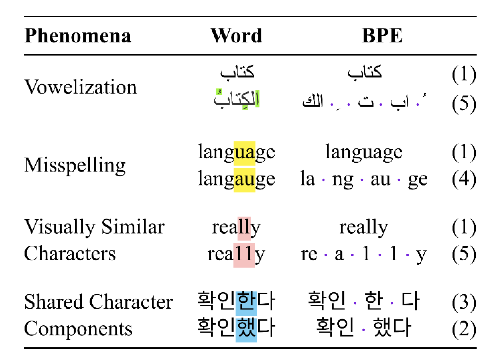

Embedding Layer might not be Necessary for Your Next NLP Project
Okay, it might be a little exaggerated, but even if you do need one, you can try starting with a small embedding layer.
This blog post talks about the embedding layer, which usually maps the whole vocabulary onto some dense distributed representations at the very beginning of most modern neural networks.
You may not realize this, but the embedding layer consist of quite many parameters, and depending on your task or dataset, you might not need them at all. Let’s do a simple math here. Typically, a pre-trained BERT has around 30,000 tokens in its vocabulary, each of which is embedded into a 768 dimension tensor and that sums up to 23M trainable parameters out of all 110M parameters of a base model.
If you trace back the memory lane, you can probably remember Word2Vec and GloVe embeddings that really kick off the NLP trend back in 2013/14. Ever since that, almost every NLP model has a nn.Embedding layer somewhere in their code. It is easy — a simple look up — but now, researchers are finding ways to remove the need for an embedding layer.
What is wrong with the embedding layer/tokenization
Tokenization and the embedding layer come hand in hand, you need a tokenizer to segment your text into tokens and an embedding layer to map each token to its representation. That part is easy, but if you ever tried to take tokenization by yourself before, you know there is no prefect tokenizer, and it can easily drive a sane man into madness.
Authors of Robust Open-Vocabulary Translation from Visual Text Representations give a nice summary of issues with tokenization methods we have right now:

Figure 1: Examples of common behavior which cause divergent representations for subword models. BPE models shown have vocabularies of size 5k.
Yes, BPE and sentencepiece are great for formal, English and clean dataset, but it is only a small tip of the iceberg — we still have informal usage of a language (emojis, confusables, code etc.), low-resource, morphologically or orthographically rich languages that cannot take direct benefit from the same method.
Hash Embedding Comes to the Rescue
Researchers from Google published two models, namely PRADO and PQRNN with their projection-based hash embeddings. Essentially, they “project” each token \(w_i\) into a length \(B\) trinary sequence by hashining every few bit into \(\{−1,0,1\}\) and uses a \(B \times b\) matrix to transformer each token into a dimension vector.
In this way, as long as you can store the hashing function, you do not require an embedding layer since you can generate your input matrix on the fly. This projection was mainly designed for on-device models and PRQNN is just an extension to PRADO where the backbone of the model is changed from LSTM to QRNN.
Similar method has been adopted in CANINE. In this model, each character is hashed and later in the model, convolution layers are used to learn a cross-character context which essentially forms the representations of subword tokens.
No Embedding for Images
It is fun to ingest text by words, tokens, or characters, but it is also fun when the model can see them too. Authors of Robust Open-Vocabulary Translation from Visual Text Representations convert each line of the text into an image and use sliding window to “tokenize” the text. Because it is agnostic to the underlying language and visually capable, it achieves some very interesting and promising results for machine translation and is very robust to noise/errors like misspelling.
A Small Embedding Goes a Long Way
If you still want an embedding layer, we can definitely reduce its size significantly with a character-level vocabulary(There are plenty of character-based PLMs such as charBERT or characterBERT) but we can go one step further to the bytes.
ByT5 and Charformer are byte-level models. They both use a small vocabulary of size around 256 (± few special IDs). With these models, the tokenization process is reduced to simple encoding from string to bytes. But they differ in how to handle such embeddings later in the model.
Since the embeddings are only linked to each character, we lose some context information regarding a subword or a whole word. So, it is important to teach/force the model to capture such relationships through architecting.
In ByT5, the authors use a different span corruption as the training objective and unbalanced encoder-decoder (emphasis on encoder) to help model understand byte sequences.
As for Charformer, the authors designed a trainable module to score different segmentations at that position in the byte sequence. Consequently, the model can learn the best byte-level segmentations on the fly and end-to-end. To the outside, it reads bytes but internally, it understands token-level boundaries.
Thoughts
Models are going bigger and smaller. The upper limit of those models are our best hope and the lower ones are our best day-to-day tools for those who like me don’t have access to a crazy number of GPUs. Let me know what you think of this post, and any feedback is welcome!
Not all papers included code when publishing, so I have a small repo for reimplementing them on my weekends, if you have any interesting ideas let me know as well!